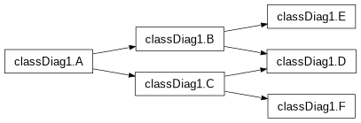
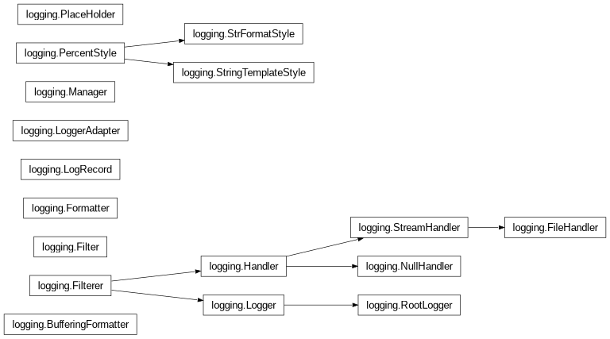
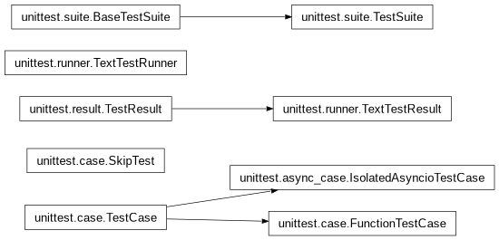
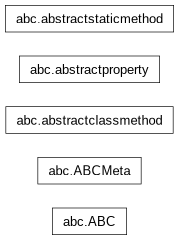
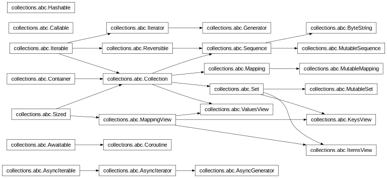

7. classesTree_diagram-eg1 (inheritance_diagram)
7.1. sphinx.ext.inheritance_diagram eg1:
see REF-docs: usage/extensions/inheritance.html
sphinx.ext.inheritance_diagram – Include inheritance diagrams !
For each given class, and each class in each given module, the base classes are determined. Then, from all classes and their base classes, a graph is generated which is then rendered via the graphviz extension to a directed graph.
! works for modues/classes but NOT for pkg/DIR as parameter !!
7.2. Diagram eg (dummy-test-module):

7.3. Diagram eg: logging…

7.4. Diagram eg: unittest…

7.5. Diagram eg: abc

7.6. Diagram eg: collections.abc
